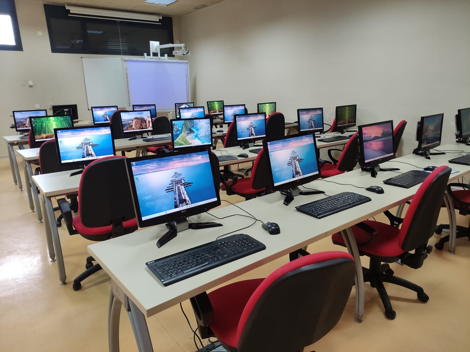
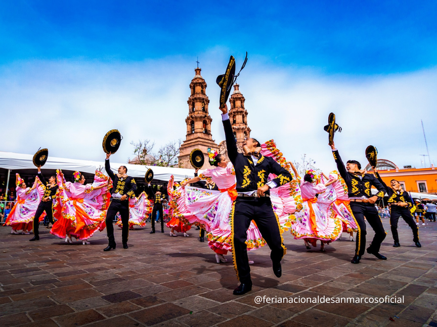

Inauguran un nuevo centro de formación tecnológica con cursos gratuitos para los jóvenes de la región. Durante la ceremonia de apertura, las autoridades locales explicaron que el centro ofrecerá programas de programación, logística, diseño digital y manejo de herramientas de oficina. Se espera que más de 500 estudiantes se beneficien durante el primer año de funcionamiento. Las instalaciones cuentan con salas de cómputo equipadas con equipos modernos, conexión a internet de alta velocidad y espacios de estudio. Los organizadores señalaron que el objetivo principal es brindar oportunidades de empleo y emprendimiento a las nuevas generaciones, y que las inscripciones estarán abiertas durante todo el mes.
Las ventas por internet crecen de manera constante entre los pequeños negocios del país. Cada vez más emprendedores utilizan las redes sociales y las plataformas digitales para mostrar y vender sus productos, lo que les permite llegar a clientes de otras ciudades. Los comerciantes aseguran que los medios de pago electrónicos han facilitado las compras y han aumentado la confianza de los consumidores. Expertos recomiendan a los nuevos vendedores cuidar la presentación de sus productos, responder rápidamente a los clientes y ofrecer envíos seguros. Según los analistas, esta tendencia continuará creciendo durante los próximos años y seguirá impulsando la economía local.

Este fin de semana se jugará la gran final del torneo juvenil de fútbol en el estadio municipal. Los dos equipos finalistas llegan en un gran momento, tras superar a sus rivales en las semifinales con partidos muy emocionantes. Se espera la asistencia de cientos de aficionados, que acompañarán a sus equipos con banderas, cantos y mucho entusiasmo. Los entrenadores indicaron que han preparado a sus jugadores con entrenamientos intensos y que buscan ofrecer un buen espectáculo. El partido comenzará a las 3:00 p. m., y al finalizar se realizará la entrega de premios a los mejores jugadores del torneo.
Líderes de varios países se reunieron para firmar un importante acuerdo que busca aumentar el uso de energías limpias, como la solar y la eólica, durante los próximos años. El objetivo es reducir la contaminación, disminuir el uso de combustibles fósiles y proteger el medio ambiente. Los representantes también se comprometieron a invertir en nuevas tecnologías y a compartir sus avances con las naciones que tienen menos recursos. Especialistas en medio ambiente afirmaron que este acuerdo es un paso importante, aunque recordaron que será necesario el compromiso de todos los gobiernos y ciudadanos para obtener resultados.
La comunidad disfrutó de una gran feria cultural con presentaciones de música, danza, exposiciones de arte y platos típicos de la región. El evento reunió a familias de todos los barrios, quienes recorrieron los puestos de artesanías, probaron diferentes comidas y participaron en juegos para niños. Los organizadores agradecieron la asistencia del público y destacaron la importancia de mantener vivas las tradiciones y de fortalecer la unión entre los vecinos. Se anunció que la feria se realizará nuevamente el próximo año, con más actividades y nuevos artistas invitados.
